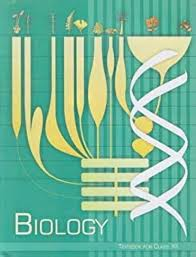

Youtube videos
Click the logo beside to logout.
Chp:1.
Reproduction in Organism
Chp:2.
Sexual Reproduction in Flowering Plants
Chp:3.
Human Reproduction Part-1
Chp:3.
Human Reproduction Part-2
Chp:4.
Reproductive Health
Chp:5.
Principles of Inheritance & Variation Part-1
Chp:5.
Principles of Inheritance & Variation Part-2
Chp:6.
Molecular Basis of Inheritance
Chp:7.
Evolution
Chp:8.
Human Health and Diseases Part-1
Chp:8.
Human Health and Diseases Part-2
Chp:8.
Human Health and Diseases Part-3
Chp:9.
Startegies for Enhancement in Food Production
Chp:10.
Microbes in Human Welfare
Chp:11.
Biotechnology Principles & Processes
Chp:12.
Biotechnology & it's Applications
Chp:13.
Organisms and Population
Chp:14.
Ecosystem
Chp:15.
Biodiversity & Conservation
Chp:16.
Environmental Issues